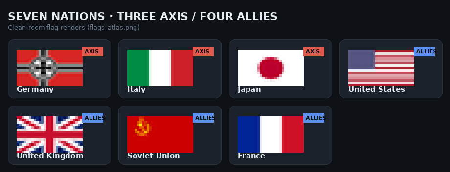
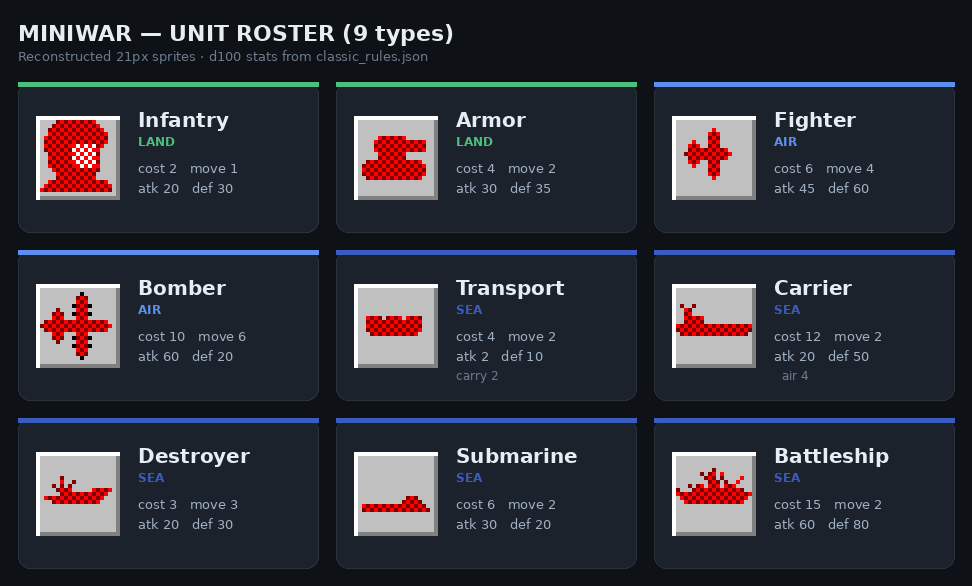
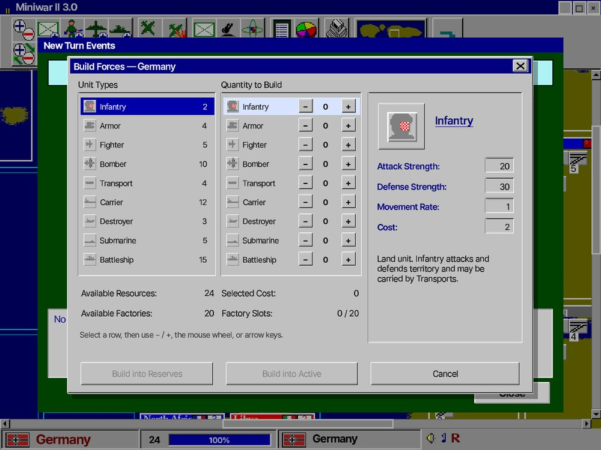
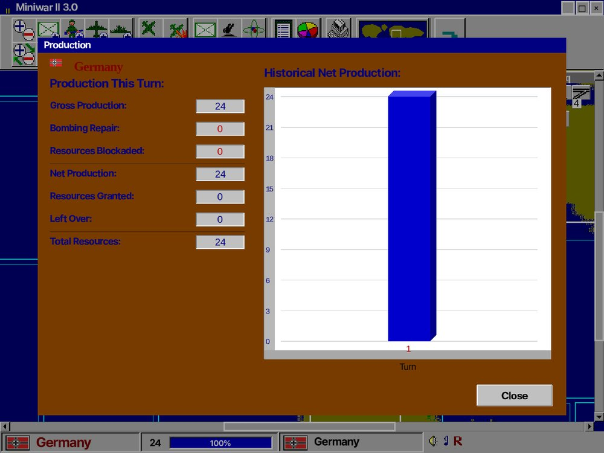
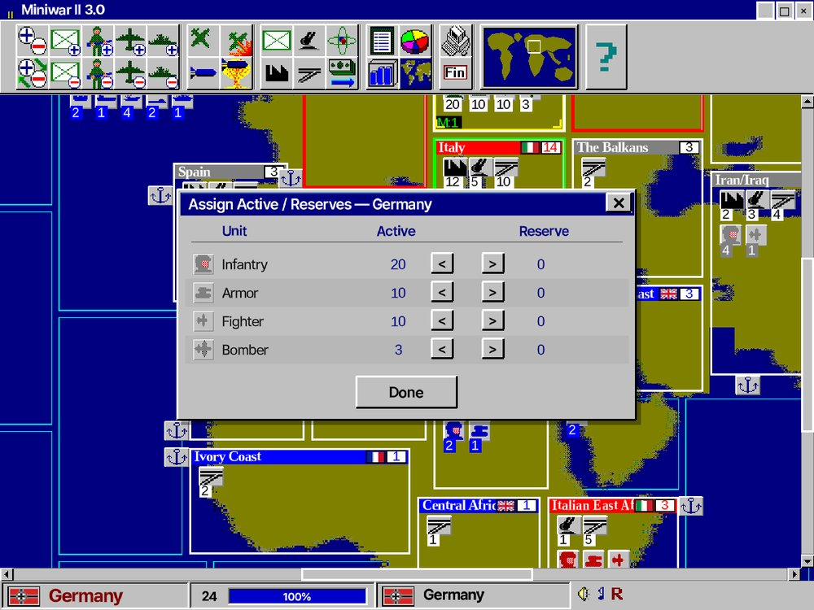
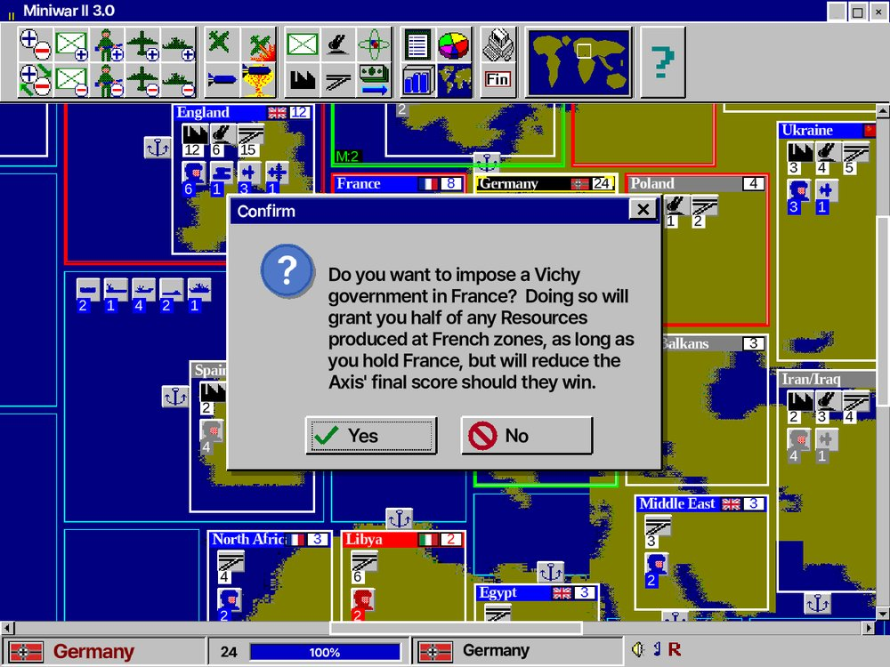

추축 3국과 연합 4국이 같은 규칙 아래 다른 처지에서 출발합니다. 유닛 9종과 건물 3종, 그리고 "가치=수입=승점" 회계가 전략의 뼈대입니다.

| 국가 | 진영 | 시작 상황 | 특성 |
|---|---|---|---|
| 독일 | 추축 | 본토 1개 지역 | 본토 가치 24 = 세계 최고 단일. 첫 턴. 폭격기 항속 +1 |
| 이탈리아 | 추축 | 이탈리아·리비아·동아프리카 | 전 영토 합쳐도 독일 본토 미만 |
| 일본 | 추축 | 일본·한국·만주·점령 중국 | AI 중 가장 공격적. 수송전단으로 대륙 투사 |
| 미국 | 연합 | 동부(20)·서부(16)·하와이·필리핀 등 | 초기 자원 40%만 사용. 피침 시 다음 턴 100% 활성화. 마지막 턴 |
| 영국 | 연합 | 본토+캐나다·인도·아프리카·오세아니아 | 자원 제한 없음. 식민지 광대·분산 |
| 소련 | 연합 | 모스크바·우랄·시베리아 등 본토 | 초기 자원 60%만 사용. 대조국전쟁 이벤트로 활성화 |
| 프랑스 | 연합 | 본토·북아프리카·상아해안·인도차이나 | 초반 독일에 본토 상실 위험 = 최고 난도 |
독일 → 프랑스 → 이탈리아 → 소련 → 일본 → 영국 → 미국(마지막). 미국이 맨 뒤라 한 바퀴의 결과를 보고 물량을 투입합니다.

classic_rules.json에서 그대로 가져왔습니다.| 병종 | 영역 | 비용 | 이동 | 공격 | 방어 | 비고 |
|---|---|---|---|---|---|---|
| 보병 Infantry | 육 | 2 | 1 | 20 | 30 | 점령 가능. 물량의 핵심 |
| 기갑 Armor | 육 | 4 | 2 | 30 | 35 | 점령 가능. 보병 동반 시 이동 1 |
| 전투기 Fighter | 공 | 6 | 4 | 45 | 60 | 비행장/항모 수용 필요. 복귀 실패 시 파괴 |
| 폭격기 Bomber | 공 | 10 | 6 | 60 | 20 | 전략폭격. 핵개발 후 원폭 투하 |
| 수송선 Transport | 해 | 4 | 2 | 2 | 10 | 지상군 2부대 탑재. 격침 시 수장 |
| 항공모함 Carrier | 해 | 12 | 2 | 20 | 50 | 항공기 4기 수용. 항해 중 함재기 출격 |
| 구축함 Destroyer | 해 | 3 | 3 | 20 | 30 | 유일한 이동 3. 최저가 군함 |
| 잠수함 Submarine | 해 | 6 | 2 | 30 | 20 | 해전 선제타격, 봉쇄 |
| 전함 Battleship | 해 | 15 | 2 | 60 | 80 | 최강. 함포로 인접 육군 궤멸(원작 AI 미사용) |
국가별 비용 보정: 독일 전투기·잠수함 5, 소련 폭격기 15, 일본 수송선 3.
지역 가치는 매턴 수입이자 승점 기여입니다. 추축 승점 120 이상이면 추축 승리, 40 이하면 연합 승리. 이후 FFA(무한전).
공장 1개당 매턴 1유닛 생산, 생산 유닛은 다음 턴부터 가동(건설 턴엔 회색). 한 번에 생산량 = min(공장 수, 가용 자원).
유지비는 없지만 이동·공격에 자원이 듭니다(이동률 0.5%, 공격률 1% 계열). 비싼 유닛일수록 비쌉니다.
미국은 초기 자원 40%, 소련 60%만 사용. 미국은 피침 시 다음 턴 완전 활성화(무혈점령은 활성화 안 됨).
프랑스 본토가 함락되면 점령국은 비시 정부 수립을 선택할 수 있습니다 — 프랑스 지역 자원의 절반을 얻지만, 추축이 승리할 경우 최종 점수에 페널티. 원작 다이얼로그 문구를 그대로 복원했습니다.



